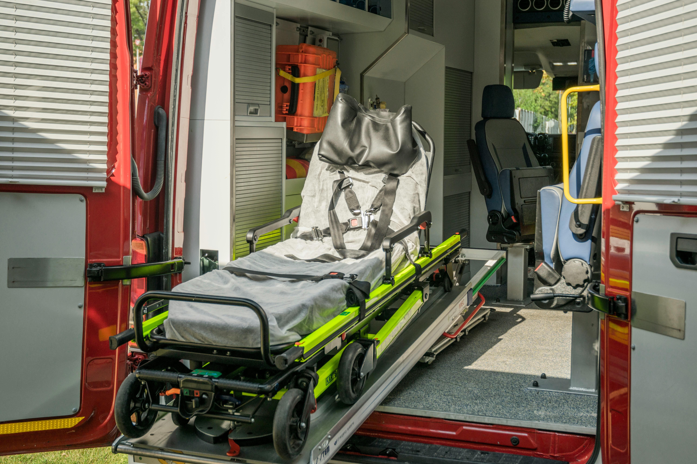

How to Become a Medical First Responder (MFR)
Author: Alexander Anderson |

Table of Contents
What is an MFR
An Medical First Responder (MFR), also known as an Emergency
Medical Responder (EMR), is someone trained in basic
lifesaving skills.
The Global Emergency Medical Registry
describes an EMR is as follows:
Emergency Medical Responders (EMR) provide immediate lifesaving care to patients who access the emergency services system. EMRs have the knowledge and skills necessary to provide basic lifesaving interventions while awaiting additional higher level EMS resource arrival. EMRs also provide assistance to higher-level personnel at the scene of emergencies and during transport. Emergency Medical Responders are a vital part of the comprehensive EMS response. Under medical oversight, Emergency Medical Responders perform basic care interventions with minimal equipment.
Classes
In order to become a Medical First Responder, you need to have
taken an Medical First Responder class. These are hard to
find, but a very important piece of the puzzle. This class
will need to teach you the raw skills of being an MFR.
Some of these skills include:
- Legal Considerations
- Scene Assessment
- Medical Scenarios
- Trauma Patients
-
Special Considerations:
- Pediatric Patients
- Geriatric Patients
- Emergency Childbirth
- Mass Casualty Incidents
Certifications
MFR's are required to pass several certifications to get their
license. The first one is taking a high-quality
CPR course.
Without this, MFR's wouldn't have the skills required to
resuscitate patients in cardiac arrest.
In order to get their license, MFR's need to pass the National
Registry Exam. This is a nationally standardized,
comprehensive exam covering all aspects of an MFR's skills.
An MFR also needs several certifications through
FEMA.
Depending on the agency, an MFR may need an additional
certification and training session:
CEVO
and Landing Zone &
Hotloading
training.
Local Protocols
Finally, MFR's NEED to be fully aware of
their local protocol. These are the region specific "How-To"
manuals for all
EMS personal.
These protocols can allow an MFR to perform more advanced
skills, or instruct an MFR to use a different dosage for
medicine than the national standard.
Comments
No comments at this time.